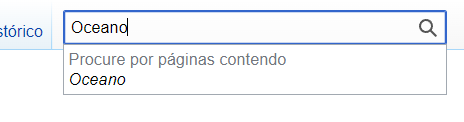
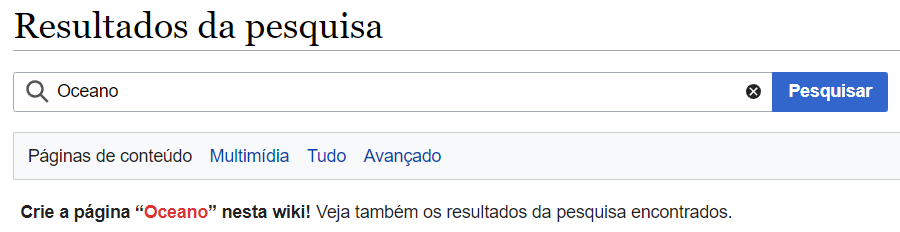

Gerencia
Contents
Gerencia#
Como criar uma página?#
Criar página nova#
Para criar uma página, basta digitar o nome da página que se busca criar na barra de pesquisa. O MediaWiki avisará que aquela página não existe e perguntará se você deseja criá-la agora. Para criar, bastará clicar no hiperlink fornecido.
Por exemplo, caso queira criar um artigo chamado Oceano em uma wiki em que não há artigo com esse título:

